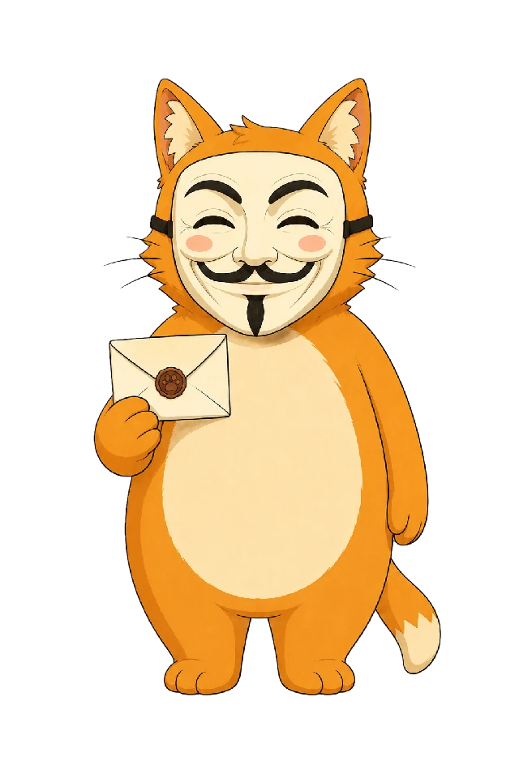

۰۱
لینک ناشناس شخصی
یک deep link برای پروفایلها و شبکههای اجتماعی میگیری؛ فرستنده وارد ربات میشود و پیام را همانجا میفرستد.
پیام ناشناس · تیکت مستقل · فارسیمحور · متنباز
نِکونیموس یک لینک شخصی داخل تلگرام به تو میدهد. دیگران میتوانند بدون نمایش مشخصات تلگرامیشان برایت پیام بفرستند؛ تو هم میتوانی پیامها را تحویل بگیری، ناشناس پاسخ بدهی، فرستنده را بلاک یا گزارش کنی و برای شناختنش نام خصوصی بگذاری.
نکو صندوق را به آرشیو دائمی مکالمه تبدیل نمیکند. هر پیام یک تیکت مستقل و مهرومومشده است؛ تا زمان تحویل در یک صف محدود میماند و payload آن بعد از ارسال موفق از storage نکو پاک میشود.

داخل ربات
مسیر اصلی ساده مانده است: لینک را میسازی، پیام میگیری و خودت تصمیم میگیری گفتوگو ادامه پیدا کند یا نه. جزئیات فنی پشت صحنهاند؛ کنترل محصول در دست کاربر میماند.
۰۱
یک deep link برای پروفایلها و شبکههای اجتماعی میگیری؛ فرستنده وارد ربات میشود و پیام را همانجا میفرستد.
۰۲
برای هر پیام تازه یک اعلان جدید میگیری و نکو تعداد فعلی پیامهای تحویلنشده را هنگام ارسال اعلان محاسبه میکند.
۰۳
با دکمهی صندوق، پیامهای فعلی بهترتیب تحویل میشوند. صندوق صفحهی تاریخچه، لیست یا آرشیو دائمی نیست.
۰۴
علاوه بر متن، مسیر فعلی از عکس، ویدئو، فایل، صدا، ویس، استیکر، انیمیشن و ویدئونوت پشتیبانی میکند.
۰۵
میتوانی ناشناس جواب بدهی و برای یک فرستنده نامی بگذاری که فقط خودت در تحویلهای بعدی میبینی.
۰۶
دریافت پیام را متوقف کن، یک مسیر ناشناس را بلاک کن یا گزارش سوءاستفاده بفرست؛ بدون نمایش هویت فرستنده در رابط معمول.
جریان محصول
نکو در رابط کاربری ساده است، اما پشت هر مرحله state محدود و قابل retry دارد تا یک failure موقت پیام سالم را حذف نکند.
هرکس لینک را باز کند وارد مسیر ارسال خصوصی همان حساب میشود.
متن یا رسانه به یک capability مستقل با route و payload رمزنگاریشده تبدیل میشود.
یک اعلان تازه با تعداد فعلی پیامهای تحویلنشده دریافت میکنی.
بعد از ارسال موفق به Telegram، payload از storage نکو پاک و unread موقت حذف میشود.
پاسخ، یک رکورد جدید در یک transcript دائمی نیست. هر پاسخ دوباره به یک تیکت مستقل در جهت مقابل تبدیل میشود.
مرزهای واقعی
نکو مشخصات تلگرامی دو طرف را در جریان عادی به هم نشان نمیدهد و storage را طوری تقسیم میکند که دادهی قابل اتصال کمتری ساخته شود. این با «ناشناسی کامل» یا E2EE یکی نیست.
sender → recipient → message وجود ندارد.ticketHash داخل inbox کاربر ذخیره نمیشود.هدف فنی این نیست که سیستم هیچ چیز نداند؛ هدف این است که storage بهسادگی به دفترچهی «چه کسی با چه کسی چه گفته» تبدیل نشود.
زیر پوست نکو
Durable Objectها state ترتیبی و تراکنشی را نگه میدارند؛ Queueها کار retryپذیر را جدا میکنند؛ D1 فقط ساختار قابل query را نگه میدارد و Vectorize صرفاً candidate retrieval انجام میدهد.
Sealed Ticket
capability تیکت ۳۲ بایت است: یک بخش برای lookup کور و یک بخش برای مشتقکردن کلیدها. raw capability داخل TicketVault یا D1 نگهداری نمیشود.
داشتن capability بهتنهایی مجوز نیست. هر action به actor تلگرام و internal account فعلی گیرنده نیز bind میشود؛ بنابراین hard reset callbackهای قبلی را بیاعتبار میکند.
Conversation Suggestions V2
این بخش اختیاری است. کاربر بعد از تکمیل پروفایل هم تا زمانی که discoverability را روشن نکند در پیشنهادها دیده نمیشود، و هیچ مکالمهای بدون پذیرش طرف مقابل شروع نمیشود.
۲۵ سؤال در ۸ بُعد، سبک خود کاربر و چیزی را که در یک گفتوگو میخواهد خلاصه میکند. این یک تست شخصیت یا تشخیص روانشناختی نیست.
Vectorize فقط یک مجموعهی محدود از candidateهای نزدیک را پیدا میکند. بعد از آن، eligibility، block، cooldown، exposure و رتبهبندی متقابل در کد TypeScript بررسی میشوند.
نتیجه به شکل «درصد سازگاری» نمایش داده نمیشود. request پذیرفتهشده فقط یک intro ticket معمولی میسازد.
کد و مستندات
صفحهی معرفی برای فهم محصول است؛ آزمایشگاه فنی برای منطق معماری؛ و repository مرجع نهایی implementation و threat model است.
نکو آمادهی شنیدن است
استفاده از ربات ساده است؛ معماری و محدودیتها هم برای بررسی عمومی در GitHub مستند شدهاند.